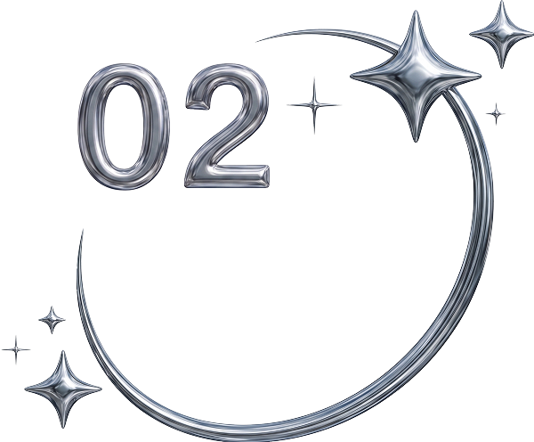

検索力と問題解決力
ヘルプデスク業務を通じて、限られた情報から状況を整理し、調査・解決する力を培ってきました。この検索力と問題解決力はWeb制作の学習でも活かされており、エラーや不明点にも自分で調べて対応しています。わからないことを放置せず、自ら乗り越える姿勢には自信があります。

山田 新菜Niina Yamada
1999年生まれ、東京都出身。
大学卒業後、IT業界で2年半ほどヘルプデスクとして勤務。
キャリアに悩み、自分を見つめ直した結果、以前から興味があった
Webデザインを学ぶことを決意し、2024年11月に公共職業訓練校
「テラハウスICA」へ入校。デザインとコーディングを学びました。
職業訓練の授業や制作を通じて、デザインの面白さや人へ与える影響力を実感。
改めてWebデザイナーの仕事に挑戦したい気持ちが強くなり、転職活動に取り組んでいます。
保有資格
普通自動車第一種運転免許、色彩検定2級、1級衣料管理士、ITパスポート、LinuC レベル1
ヘルプデスク業務を通じて、限られた情報から状況を整理し、調査・解決する力を培ってきました。この検索力と問題解決力はWeb制作の学習でも活かされており、エラーや不明点にも自分で調べて対応しています。わからないことを放置せず、自ら乗り越える姿勢には自信があります。

ヘルプデスクでは、PC操作に不慣れなお客様にも専門用語を避けてわかりやすく説明するなど、相手の理解度に合わせた対応を心がけてきました。カフェのアルバイトでも、お客様の様子に合わせて接客のトーンやスピードを調整。状況を読み取り、相手にとって心地よい対応を考えて行動する力があります。
異業種からWebデザインの道に進むと決めてから、職業訓練で課題に取り組み、授業以外の時間も自習を重ねてスキルを磨いてきました。苦手な分野も一つひとつ理解できるまで粘り強く向き合い、着実に成果を出す努力を続けています。成長のための努力は惜しみません。
★★★★☆
バナーやWebサイトのデザイン制作ができます。
画像の加工や色調補正にも対応可能です。
★★★★☆
主に文字の装飾やデザインのあしらい作成に使用しています。
★★★☆☆
Webサイトのデザイン制作ができます。
基本的な操作に慣れています。
★★★★☆
Visual Studio CodeとDreamweaverを使用し、
基本的なコーディングができます。
★★★☆☆
スライダーなどの基本的な動的コンテンツを実装できます。